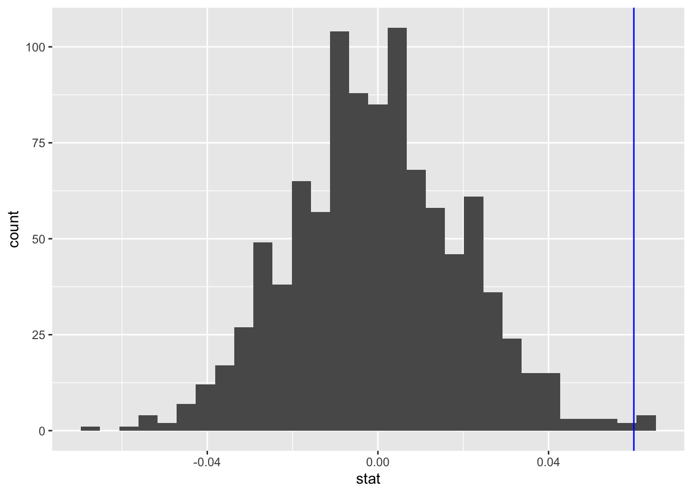

This project contintue to analyze my FYP data by examine how the
likelihood of a rat’s lever press depends on its previous press.
Specifically, it examines the conditional probability of lever pressing
behavior: whether drug treatments influence the rats’ tendency to wait
longer or respond prematurely following a previous rewarded or premature
response.
0. Prep.
library(tidyverse)
## ── Attaching core tidyverse packages ──────────────────────── tidyverse 2.0.0 ──
## ✔ dplyr 1.1.4 ✔ readr 2.1.5
## ✔ forcats 1.0.0 ✔ stringr 1.5.1
## ✔ ggplot2 3.5.2 ✔ tibble 3.2.1
## ✔ lubridate 1.9.4 ✔ tidyr 1.3.1
## ✔ purrr 1.0.4
## ── Conflicts ────────────────────────────────────────── tidyverse_conflicts() ──
## ✖ dplyr::filter() masks stats::filter()
## ✖ dplyr::lag() masks stats::lag()
## ℹ Use the conflicted package (<http://conflicted.r-lib.org/>) to force all conflicts to become errors
library(tidymodels)
## ── Attaching packages ────────────────────────────────────── tidymodels 1.3.0 ──
## ✔ broom 1.0.8 ✔ rsample 1.3.0
## ✔ dials 1.4.0 ✔ tune 1.3.0
## ✔ infer 1.0.8 ✔ workflows 1.2.0
## ✔ modeldata 1.4.0 ✔ workflowsets 1.1.0
## ✔ parsnip 1.3.1 ✔ yardstick 1.3.2
## ✔ recipes 1.3.0
## ── Conflicts ───────────────────────────────────────── tidymodels_conflicts() ──
## ✖ scales::discard() masks purrr::discard()
## ✖ dplyr::filter() masks stats::filter()
## ✖ recipes::fixed() masks stringr::fixed()
## ✖ dplyr::lag() masks stats::lag()
## ✖ yardstick::spec() masks readr::spec()
## ✖ recipes::step() masks stats::step()
library(openintro)
## Loading required package: airports
## Loading required package: cherryblossom
## Loading required package: usdata
##
## Attaching package: 'openintro'
##
## The following object is masked from 'package:modeldata':
##
## ames
IM_Carray_all_clean <- readRDS("~/Desktop/WFU/25Spring/R/portfolio.pdf/data/fyp/IM_Carray_all_clean.rds")
Carray is a compound variable where each event time in the box is
saved with an event code: .1 = Right lever press .2 = Left Lever press
.3 = Nosepoke .4 = FREE PELLET .5 = EARNED PELLET The number BEFORE the
decimal is a time stamp. The two rightmost numbers are .XY For example,
1800 would be 18.00 seconds.
# We need to filter out all rows that are not lever presses!
IM_Carray_all_clean <- IM_Carray_all_clean %>%
filter(Event == 1)
#IM_Carray_all_clean <- IM_Carray_all_clean %>%
# filter(!(Event %in% c(2, 4)))
#calculate the inter-response time
IM_Carray_all_clean <- IM_Carray_all_clean %>%
group_by(Subject, Day) %>%
mutate(Interval = c(0, diff(Time))) %>%
ungroup()
1. Calculate condition probability of lever press type based on
previous press
# get outcome from Interval
IM_Carray_all_clean <- IM_Carray_all_clean %>%
arrange(Subject, Drug) %>%
group_by(Subject) %>%
mutate(
Outcome = ifelse(Interval >= 20, "Rewarded", "Premature"),
PrevOutcome = lag(Outcome)
) %>%
ungroup()
# get probabilities
p_table <- IM_Carray_all_clean %>%
filter(!is.na(Outcome) & !is.na(PrevOutcome)) %>%
group_by(Drug, PrevOutcome, Outcome) %>%
summarise(n = n(), .groups = "drop") %>%
group_by(Drug, PrevOutcome) %>%
mutate(Prob = n / sum(n)) %>%
ungroup()
# characterize behaviors
# premature follow by premature: perseverance
# premature follow by rewarded: improvement
# rewarded follow by premature: regression
# rewarded follow by rewarded: maintenance
p_table$Type <- NA
p_table$Type <- ifelse((p_table$PrevOutcome == "Premature" & p_table$Outcome == "Premature"), "perseverance", p_table$Type)
p_table$Type <- ifelse((p_table$PrevOutcome == "Premature" & p_table$Outcome == "Rewarded"), "improvement", p_table$Type)
p_table$Type <- ifelse((p_table$PrevOutcome == "Rewarded" & p_table$Outcome == "Premature"), "regression", p_table$Type)
p_table$Type <- ifelse((p_table$PrevOutcome == "Rewarded" & p_table$Outcome == "Rewarded"), "maintenance", p_table$Type)
# I'm only visualizing S_HIGH and VEH because they are the two groups that we saw behavioral differences in previous analyses
p_table %>%
filter(Drug %in% c("VEH", "S_HIGH")) %>%
ggplot(aes(x = Type, y = Prob, fill = Drug)) +
geom_col(position = "dodge")
From the plot, we can see that rats who received S_HIGH displayed
more perseverance abd regression behaviors, and less improvement and
maintenance behaviors compared to the VEH control group.
1. Permutation test of condition probabilities
1.1 Improvement vs. Perseverance
# previous:premature
# observed prop: VEH - S_HIGH
0.324 - 0.264
## [1] 0.06
# permutation
null_dist <- IM_Carray_all_clean %>%
filter(!is.na(Outcome) & !is.na(PrevOutcome)) %>%
filter(Drug %in% c("VEH", "S_HIGH")) %>%
filter(PrevOutcome == "Premature") %>%
specify(
response = Outcome,
explanatory = Drug,
success = "Rewarded"
) %>%
hypothesize(null = "independence") %>%
generate(1000, type = "permute") %>%
calculate(
stat = "diff in props",
order = c("VEH", "S_HIGH")
)
# visualize
null_dist %>%
ggplot(aes(x = stat)) +
geom_histogram() +
geom_vline(xintercept = 0.06, color = "blue")
## `stat_bin()` using `bins = 30`. Pick better value with `binwidth`.

# get p-value
null_dist %>%
filter(stat >= 0.06) %>%
summarize(p_value = n() / nrow(null_dist))
## # A tibble: 1 × 1
## p_value
## <dbl>
## 1 0.001
The p-value is 0.003, which means that S_HIGH does reduces rats’
probability of displaying improvement behaviors.
1.2 Maintenance vs. Regression
# previous:rewarded
# observed prop: VEH - S_HIGH
0.481 - 0.365
## [1] 0.116
# permutation
null_dist <- IM_Carray_all_clean %>%
filter(!is.na(Outcome) & !is.na(PrevOutcome)) %>%
filter(Drug %in% c("VEH", "S_HIGH")) %>%
filter(PrevOutcome == "Rewarded") %>%
specify(
response = Outcome,
explanatory = Drug,
success = "Rewarded"
) %>%
hypothesize(null = "independence") %>%
generate(1000, type = "permute") %>%
calculate(
stat = "diff in props",
order = c("VEH", "S_HIGH")
)
# visualize
null_dist %>%
ggplot(aes(x = stat)) +
geom_histogram() +
geom_vline(xintercept = 0.116, color = "blue")
## `stat_bin()` using `bins = 30`. Pick better value with `binwidth`.
# get p-value
null_dist %>%
filter(stat >= 0.116) %>%
summarize(p_value = n() / nrow(null_dist))
## # A tibble: 1 × 1
## p_value
## <dbl>
## 1 0
The p-value is .002, which means that S_HIGH does reduces rats’
probability of displaying maintenance behaviors.
2. Conclusion
Overall, the results show that rats who received high dose of
scopolamine displayed more perseverative and regressive behaviors (less
improvement and maintenance) compared to rats who received saline as
control.